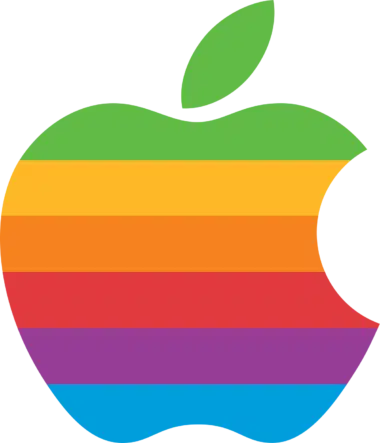
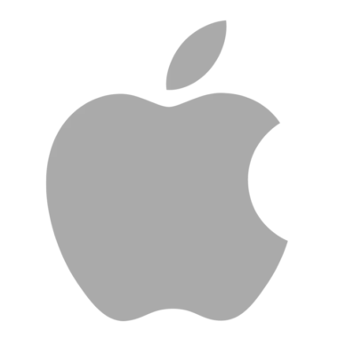

marcas famosas
Todos os dias, onde quer que estivermos, somos bombardeados por uma infinidade de logotipos diferentes. Seja um ícone, um emblema, uma sigla ou uma palavra (ou a combinação de tudo isso), todos esses símbolos buscam cumprir um papel em comum: comunicar a identidade visual de uma marca e torná-la memorável para o público. No entanto, são poucas as empresas que, em meio a tantos exemplos, conseguem criar um logotipo verdadeiramente único e indissociável da sua marca. A Apple, por sua vez, pode ser facilmente posicionada no seleto grupo de companhias que alcançaram tal proeza, afinal, é praticamente impossível sequer pensar nela sem que a famosa maçã mordida venha à nossa mente.
Mas afinal, o que faz um logo tão icônico? O que faz a maçã mordida ser tão reconhecível quanto o cavalo rampante da Ferrari, o “M” do McDonald’s ou o Swoosh da Nike?
Neste artigo, iremos dar uma olhada em como se deu o processo criativo que levou até a criação do famoso logotipo da Apple e as diversas mudanças sofridas pelo ícone ao longo dos seus quase 45 anos de existência — a fim de entender não só sua história, mas o que o faz tão marcante.
a primeira logo
O primeiríssimo logotipo da história da Apple estava longe de transmitir a mesma simplicidade e objetividade do atual. Criado em 1976 por Ronald Wayne (o terceiro e não tão conhecido cofundador da empresa), o emblema contava com a figura de Isaac Newton no folclórico momento da descoberta da gravidade, quando uma maçã supostamente teria caído sobre sua cabeça enquanto lia um livro debaixo de uma macieira.
O emblema é cheio de detalhes e ostenta, até mesmo, um trecho de um poema escrito pelo poeta romântico inglês William Wordsworth em sua moldura, que diz: Newton…uma mente sempre viajando pelos estranhos mares do pensamento. O nome da companhia, por sua vez, aparece estampado em duas flâmulas que envolvem a moldura central. Por motivos óbvios, essa primeira versão não durou muito tempo. Seu alto nível de detalhes prejudicava sua reprodução em produtos e materiais impressos, além de não ser facilmente identificável vista de longe. Steve Jobs também acreditava que o visual vintage do logotipo não conseguia transmitir com precisão a filosofia da empresa, além de não ter um apelo forte com o público jovem. Dessa forma, o logo newtoniano foi finalmente aposentado por Jobs menos de um ano após a sua criação.
a criação da maçã mordida
A tarefa de criar um logotipo mais moderno e objetivo para a Apple caiu então nas mãos do designer gráfico Rob Janoff, contratado por Jobs em 1977. Após se reunir pela primeira vez com o executivo no começo daquele ano, Janoff passou cerca de uma semana e meia estudando a forma de maçãs reais e desenhando vários rascunhos do que viria a se tornar o seu primeiro e único protótipo.
Nascia, então, a primeira versão da boa e velha maçã mordida, que na época ainda contava com o clássico arco-íris em alusão ao vindouro Apple II — o primeiro computador pessoal do mundo com um display colorido. O logotipo foi prontamente aprovado por Jobs e adotado em todos os produtos, comerciais e documentos da empresa pelas próximas duas décadas.
Pessoas mais atentas já devem ter percebido que a ordem das cores no ícone não segue exatamente a mesma sequência encontrada em um arco-íris tradicional. Em entrevista, Janoff explicou que, exceto pela cor verde, que foi posicionada no topo por uma exigência de Jobs (já que é onde a folha da maçã está), o padrão adotado para o ícone não possui nenhuma razão específica.
Além disso, existem inúmeras teorias que tentam explicar a existência da mordida na maçã. Alguns acreditam se tratar de uma referência ao suicídio de Alan Turing, matemático considerado pai da computação que se suicidou ao comer uma maçã envenenada. Outros defendem a tese de que o detalhe tem inspiração no fruto proibido do conto de Adão & Eva.
Na verdade, segundo o próprio Janoff, o detalhe foi adicionado ao ícone para diferenciar a maçã de um tomate ou uma cereja, independentemente da distância ou do ângulo.
Janoff também chegou a trabalhar para empresas como IBM e Intel, tempos depois.
mas isso foi apenas duas versões da nossa maçã.
todas as versões da apple
essas são as maçãs do inicio até os dias de hoje. Inclusive o iphone mais atual até hoje e o iphone 14
- by ron wayle
- by rob janaff
- monochrome version
- aqua vesion
- chrome version
- current version
essas eram as versões da apple de 1976-2017, mas iai qual sua favorita?